En mi pasado he jugado jugaba fútbol,y era portero pero me di cuenta que no era para mí ya que fallaba mucho y me sentía frustrado de tanto fallar,y yo tenía crisis de mi enfermedad antes,y un día me dió una crisis de mi enfermedad y dejé de ir a la escuela de fútbol,dure como dos o tres años inactivo de deporte,hasta que un día salí con mis primos al parque s jugar voleibol,no sabía jugarlo pero mis primos me enseñaron,con el tiempo fui mejorando en el voley por mi cuenta,y en lo que quiero estudiar ps antes queris ser doctor pero gane algunos titulos en ingeniería y cosas asi entonces me di cuenta que eso era para mi
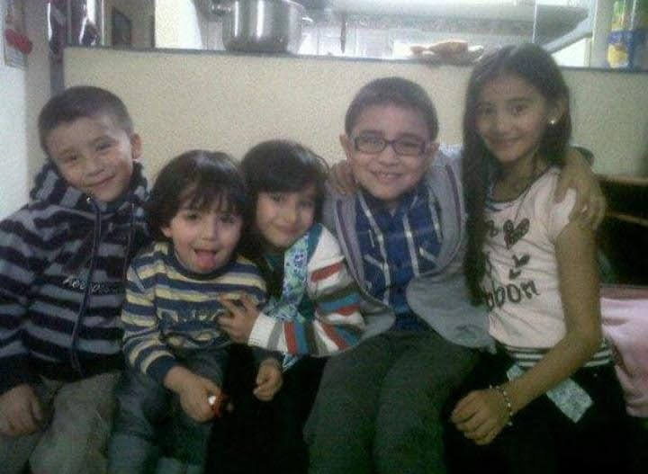En el colegio he compartido el mayor tiempo de mi vida,ya también con algunas personas que considero especiales para mí en mi vida,que son mis amigos,además en el colegio inicio todo lo mío del voleibol,en el colegio he aprendido muchas cosas y he descubierto cosas chevres y personas especiales para mí como lo son mis amigos y mi novia,el colegio me ha ayudado a darme cuenta de muchas cosas como lo es la madurez y todo eso,algo que agradezco y que me ayudara en mi futuro.
| 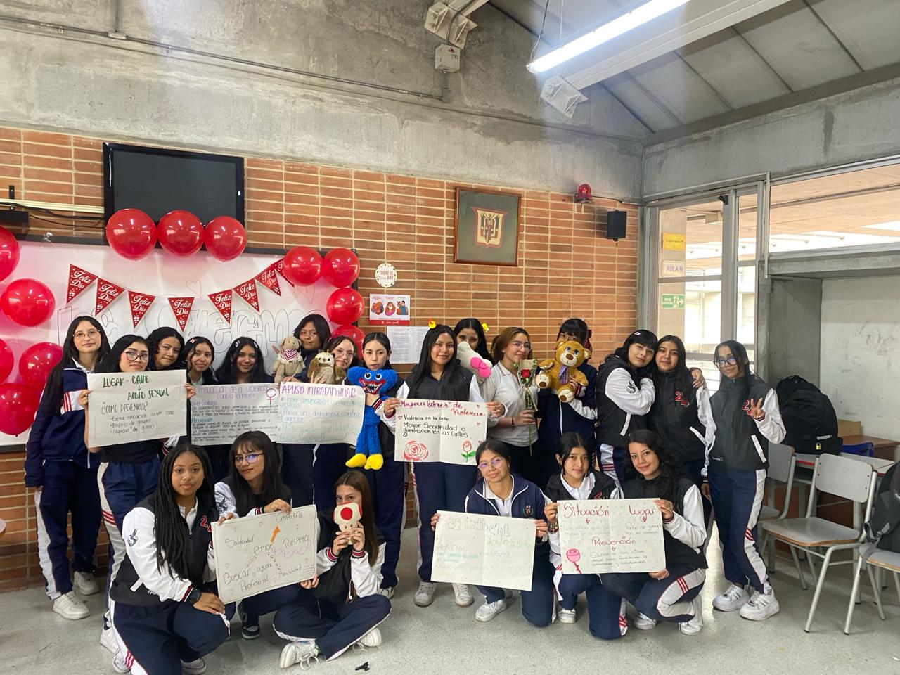 | 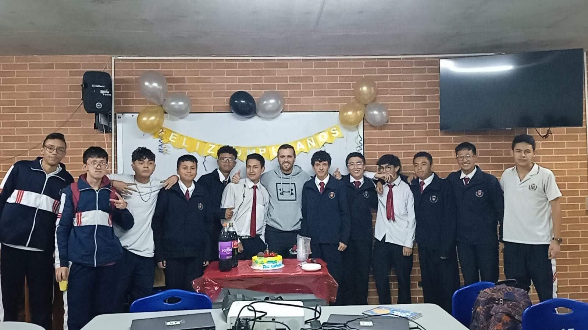 | 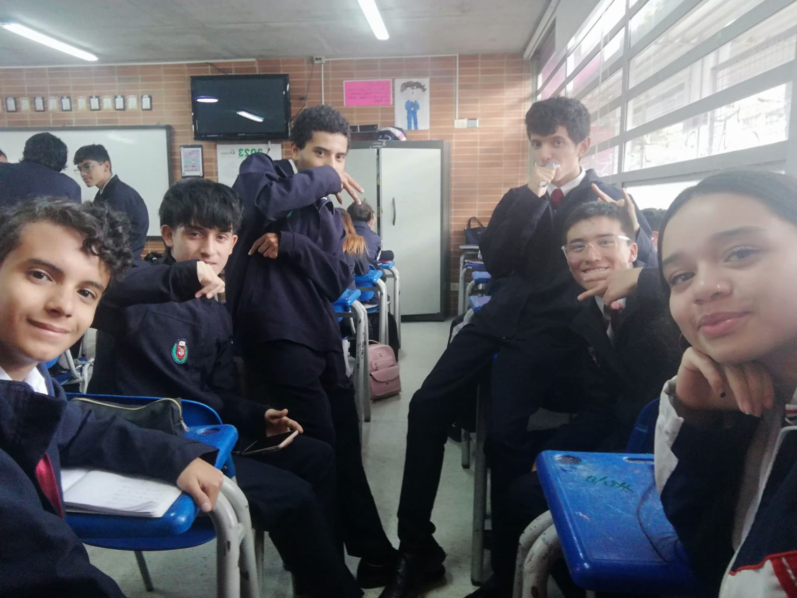 |
| 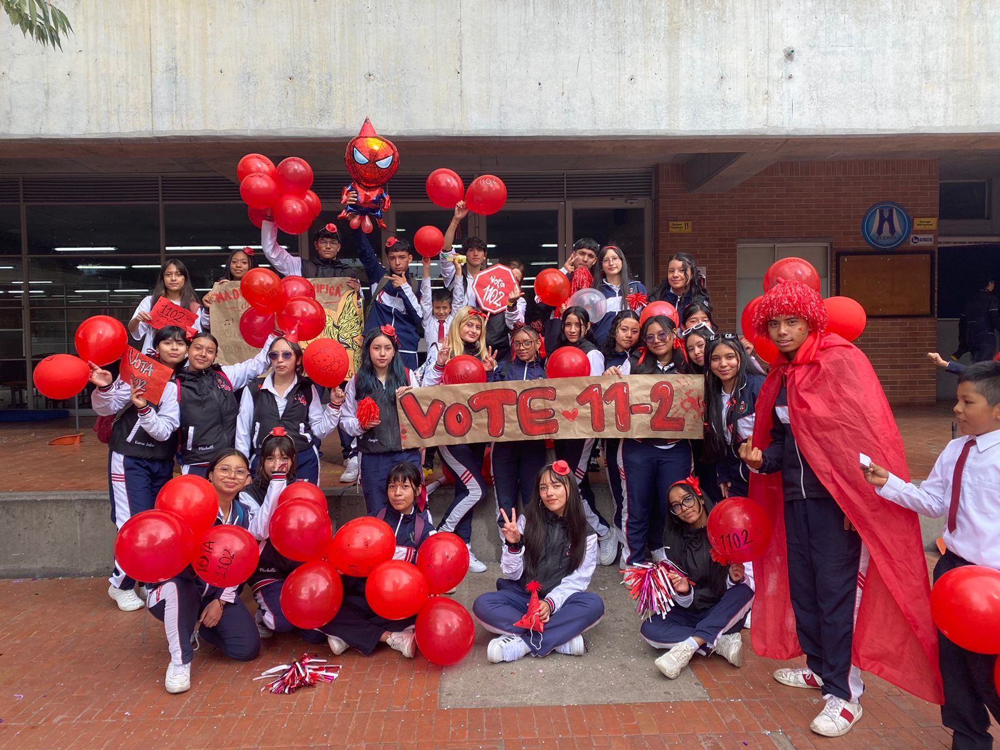 |
El voleibol se ha vuelto algo importante para mí ya que es un deporte que me gusta y en el me ha ido bien,también he conocido muchas personas por medio del voleibol y he compartido lindos momentos,como toda persona hace un deporte el mío es el voleibol,es una deporte interesante para mí y el cual me ha llamado mucho la atención tanto por su método de juego como por su estética y aunque sea pequeño sirvo para ser libero
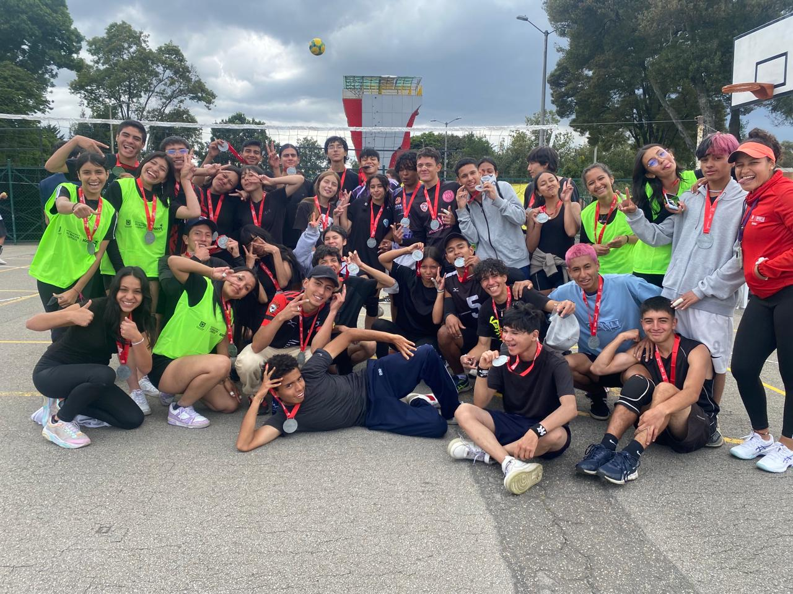 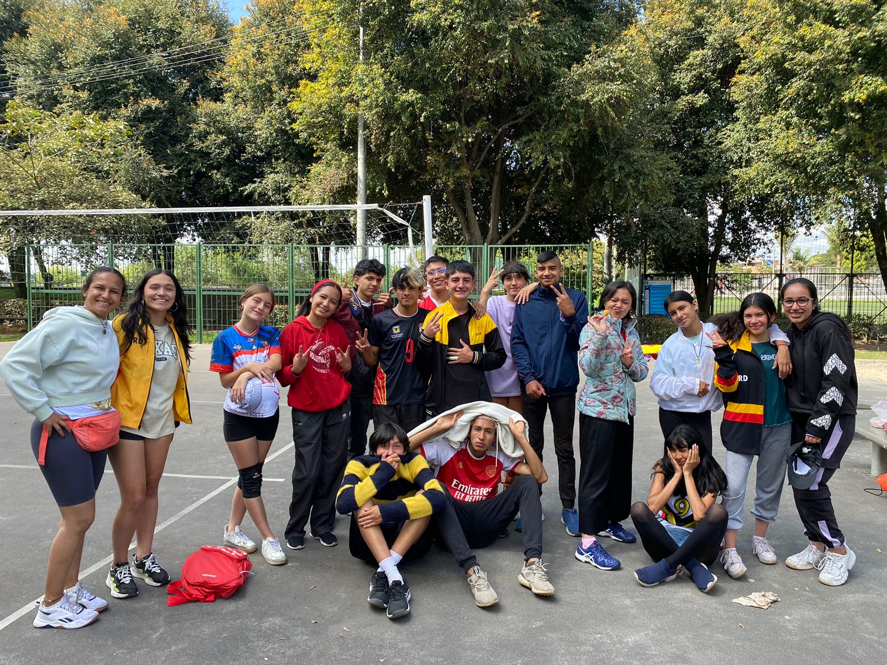 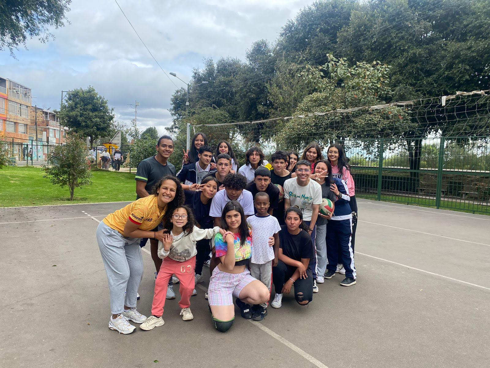libero:El líbero es un jugador defensivo que puede entrar y salir continuamente del campo sustituyendo a cualquiera de los otros jugadores cuando por rotación se encuentran en posición defensiva. Es fácilmente reconocible porque viste diferente del resto del equipo.No puede ser capitán de equipo ni capitán en juego. No puede bloquear, ni hacer tentativa de bloqueo. No puede completar un golpe de ataque cuando el balón esta completamente por encima de la red.
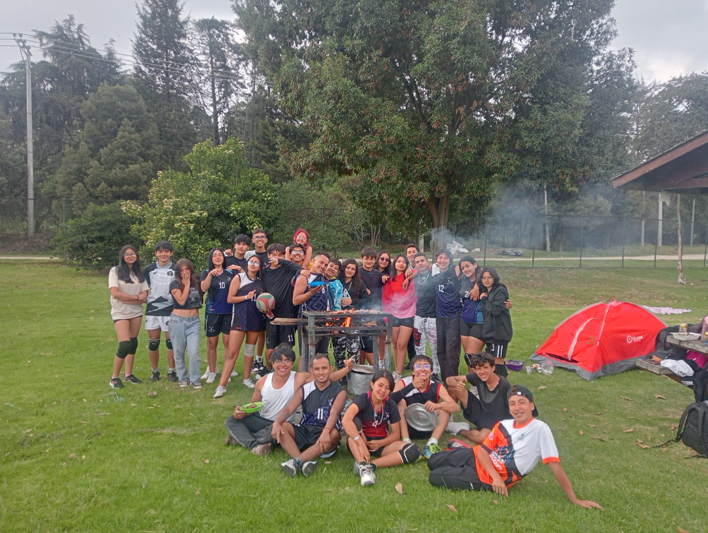 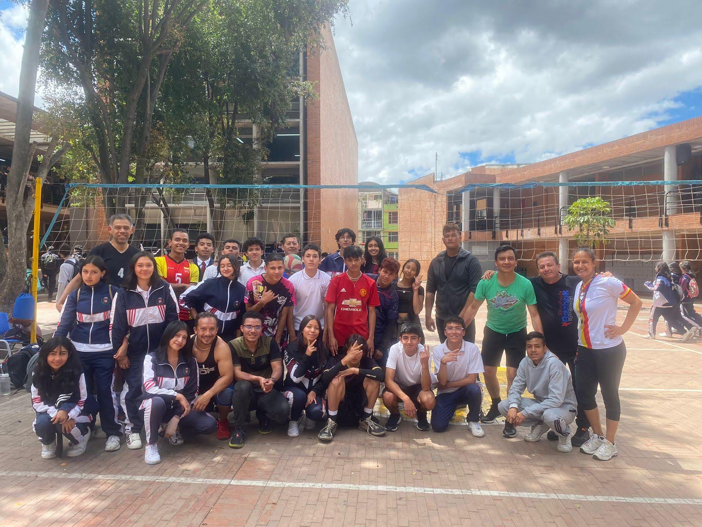Mis pocos amigos que tengo son personas muy especiales para mí ya que son personas que han estado conmigo en las buenas y malas y me han apoyado en todo,por más tonto que sea siempre me apoyaron asi yo haya tomado decisiones que no son me apoyaron, de eso ví como son los verdaderos amigos y quienes no,quienes de verdsd son amigos no se separan por peleas de mujeres,no se separan solo porque no le hizo caso en un consejo,en esas minimas cosas es donde se ve la madurez de las personas y la verdadera amistad que decian tener,Julián es mi gran amigo ya que me ha apoyado en todo y se que puedo contar con el para todo,ademas tenemos un vinculo que es el voleibol
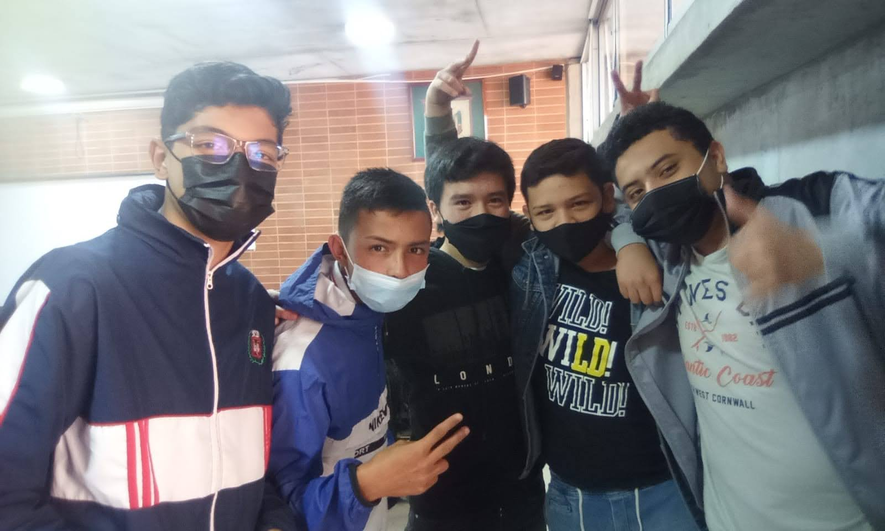 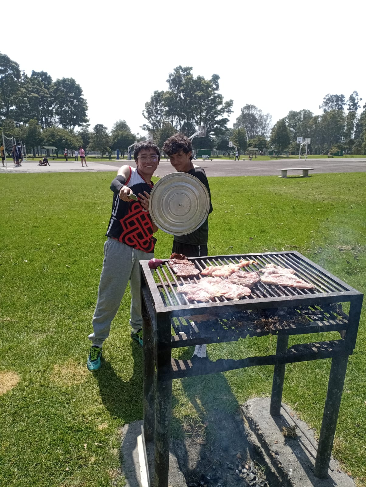En mi futuro espero estár en una buena universidad y estar estudiando lo que quiero que es ingeniería mecatrónica ya que me ha interesado mucho el tema de construir cosas,también me veo con una linda familia y con mi mama feliz con la casa que espero darle en un futuro
explicar todo de eso
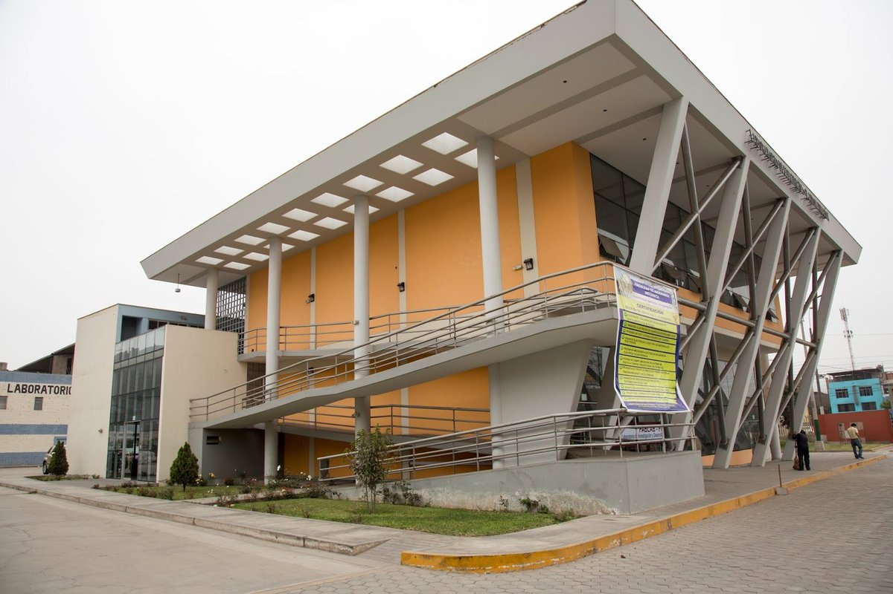 UniversidadMi familia es muy importante ya que son mi mamá y mi hermana y un gatito que tengo que se llama tovy.
mi mamá es una persona muy especial para mí,ella me ha apoyado en todo y me ayudado en mis momentos más difíciles,es la mujer mas luchonas y valiente que he visto en mi vida ya que ella sola nos ha sacado a delante a mi hermana y a mí,ella ha sufrido de todo y yo la he visto llorar pero ella se lo valiente que es siempre se levanta de esos momentos difíciles y sigue,por eso espero en un futuro agradecerle todo lo que está haveieno por mi hermana y por mi
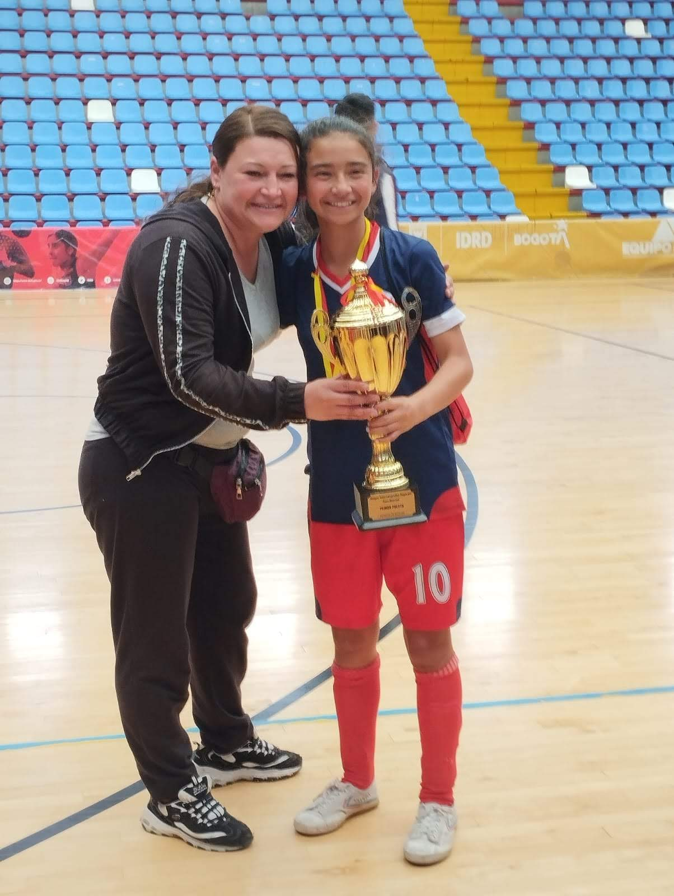mi hermana es especial para mí aunque pelea mucho,pero eso no hace que se le quite lo buena que es jugando fútbol,ya que ella ganó los intercolegiados y se va de viaje a representar Bogotá y al colegio,eso me hace sentirme muy orgulloso de ella y lo lejos que va a llegar
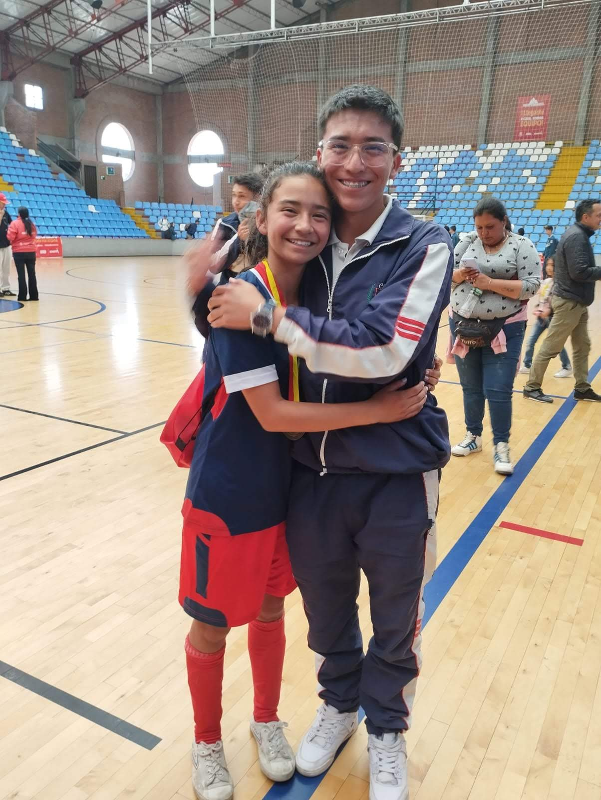